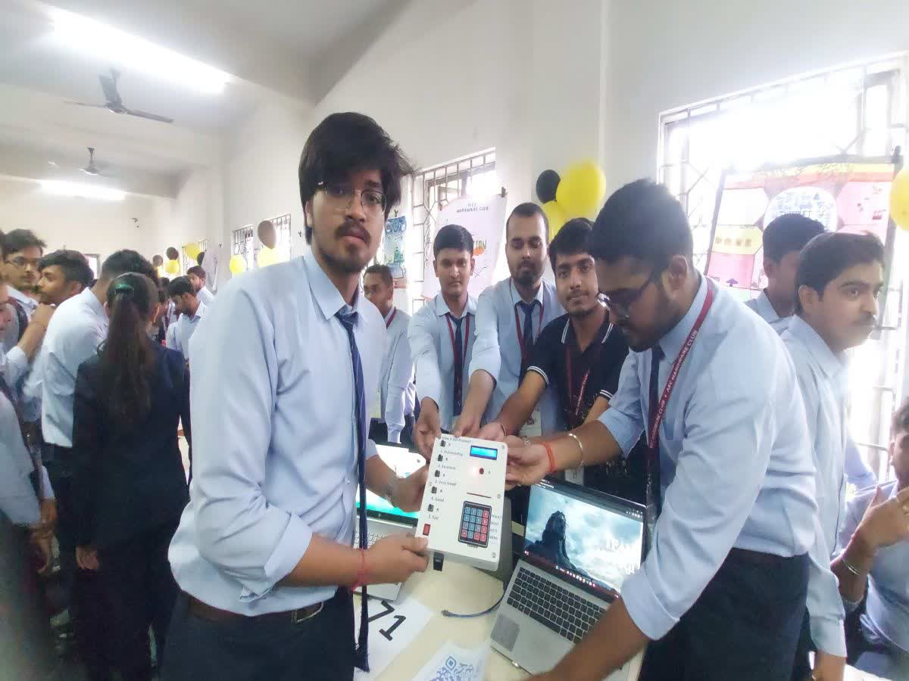

Limelight Moments
Media Coverages
कॉलेज के छात्रों ने एडवांस वोटिंग मशीन बनाई है
Advance voting machine: बंगाल में आसनसोल इंजीनियरिंग कॉलेज के छात्रों ने बनाई एडवांस वोटिंग मशीन पश्चिम बंगाल में आसनसोल इंजीनियरिंग कॉलेज के छात्रों ने एडवांस वोटिंग मशीन बनाई है. यह मशीन आधार कार्ड से जुड़ा है और फिंगरप्रिंट, आंखों की रेटिना का पता लगाने की क्षमता रखता है.